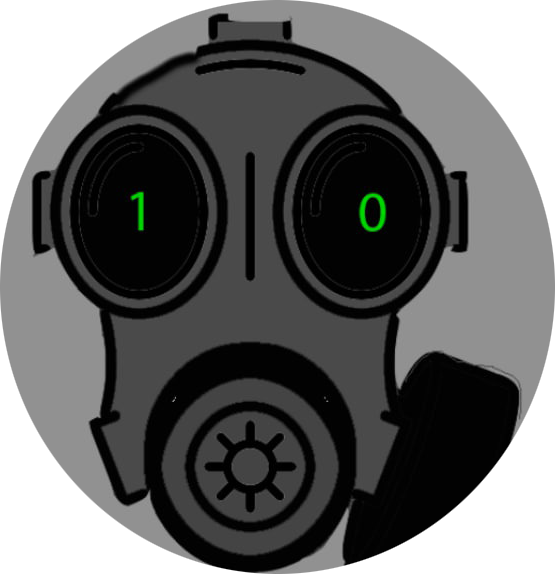

Доброго времени суток, я Vova Vist. Активно развиваюсь в направлении IT-отрасли.
Основная информация о проектах, которых я разрабатывал, приведена ниже. При изучении теории использовал открытые источники, такие как metanit.com, youtube.com, developer.mozilla.org, а так же различные книжные издания по алгоритмам, благодаря чему я в них хорошо разбираюсь. Умею находить информацию в гугле, а также работать с ChatGPT.Готов изучить новую программу или технологию. Основные качества - Трудолюбив, комуникабелен, ответственнен, имеет хорошее чуство юмора. Имею среднее общее образование
Я представляю вам свой собственный веб-форум. Вы можете зарегистрироваться на нем, создавать свои собственные темы и писать сообщения в них, которые будут появляться в реальном времени без необходимости обновления страницы. Этот форум использует cистему классов для обеспечения безопасности проекта и удобства обслуживания. Все части приложения (логгер, база данных, бизнес-логика) реализованы в виде классов.
Я представляю вам свой простой блог на веб-фреймворке Django. Он позволяет пользователям регистрироваться, создавать свой собственный блог, просматривать и комментировать статьи. Я использовал функции, предоставленные этим фреймворком, такие как обработка запросов, аутентификация пользователей и рендеринг шаблонов.
Это проект - бесплатная CMS с открытым исходным кодом для создания интернет магазина. В нём можно настроить валюту, название магазина и выкладывать карточки товаров, а также просматривать статистику товара.